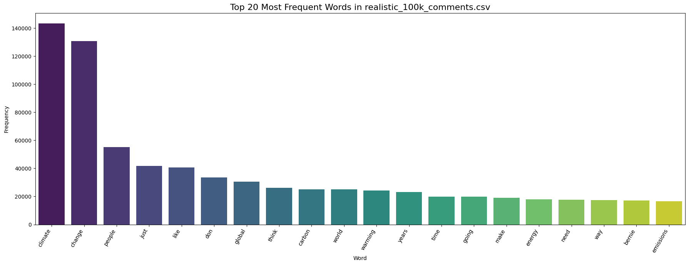
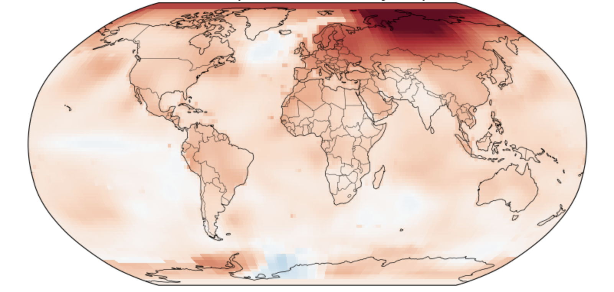
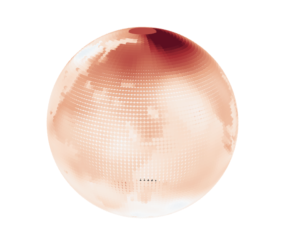

The original dataset was downloaded from Kaggle , and this dataset contained millions of records, making it impractical to process fully. Therefore, we randomly extracted 100,000 comments, ensuring a diverse and representative selection for further analysis.
After sampling, we performed text cleaning, which involved removing URLs, special characters, HTML entities, and standard English stopwords. We then conducted a word frequency analysis to identify the 20 most common words across the comments.
During this stage, we manually grouped semantically related words to create clearer, more meaningful topics for analysis.
For example: We combined "climate" and "change" into the single topic "Climate Change", since these terms overwhelmingly co-occur and refer to the same central idea. Similarly, we combined "global" and "warming" into "Global Warming" to capture a specific climate phenomenon often discussed together.
From the top 20 most frequent words, we selected five major topics for deeper exploration: climate change, global warming, bernie, energy, and world.
The selection process was partly subjective but guided by several criteria:
This curation allowed us to focus the treemap and subsequent analysis on terms that are:
In summary, while some judgment was involved, our selections aimed to preserve the core substance of Reddit climate discussions without letting generic filler words dilute the analysis.
We then designed an interactive treemap visualization with a two-level hierarchical structure:
The size of each word block is proportional to its frequency within its topic, and this layout remains fixed across different interactions. Users can dynamically recolor the treemap by selecting among three metrics:
Changing the metric only alters the color encoding; the size and structure of the treemap remain constant, enabling easy comparison of different dimensions without losing spatial context.
In addition, clicking on a specific word block reveals five randomly selected Reddit comments that include the chosen word, with the word highlighted in yellow. This allows users to directly observe how individual words are used in real conversations.
Finally, due to internal storage and processing limitations on Render (the platform used to host the interactive dashboard), we further restricted the working dataset to 10,000 rows.
⬅️ Go Back to Treemap SectionTo visualize long-term trends in global warming, we used historical temperature anomaly data from NASA’s GISTEMP project. Specifically, we obtained the Land-Ocean Temperature Index (LOTI) dataset with ERSSTv5 sea-surface temperatures and 1200 km spatial smoothing, provided in compressed NetCDF format.
This dataset offers monthly gridded temperature anomalies from 1880 to 2024, with each grid point representing the deviation in °C from the 1951–1980 baseline climatology, on a 2°×2° latitude-longitude grid.
The following data processing steps were applied:
Temporal averaging:For each selected year, we calculated the annual mean temperature anomaly by averaging all twelve months. This generated a single, continuous global anomaly field per year, highlighting the overall temperature trend.
Spatial interpolation and smoothing: The original GISTEMP data has a relatively coarse spatial resolution of 2°×2°, which can produce blocky or jagged visualizations and result in some small-scale noise.
 These visulaizations using the 2°×2° data are uncontinuous and hard to read.
To create smoother, more continuous maps:
Importantly, areas with missing data (NaNs) were carefully handled. We use the valid data from nearby grid points to fill in these gaps, ensuring that the final map accurately reflects the underlying temperature patterns without introducing artificial anomalies.
These data processing steps ensure that the resulting anomaly maps are both visually coherent and faithful to large-scale temperature structures, making global warming patterns easier to interpret without distorting major trends.
Data Source Acknowledgment:The data used in this analysis comes from: NASA Goddard Institute for Space Studies (GISS), GISTEMP v4 Land-Ocean Temperature Index (LOTI), using ERSSTv5 ocean data and 1200 km smoothing.
⬅️ Go Back to Global Warming SectionThe dashboard utilizes two datasets: Global monthly temperature records and Global temperature anomaly data
The interactive dashboard comprises three coordinated visualizations arranged horizontally:
Polar Bar Chart (Left):
Line and Area Chart (Middle):
Polar Line Chart (Right)